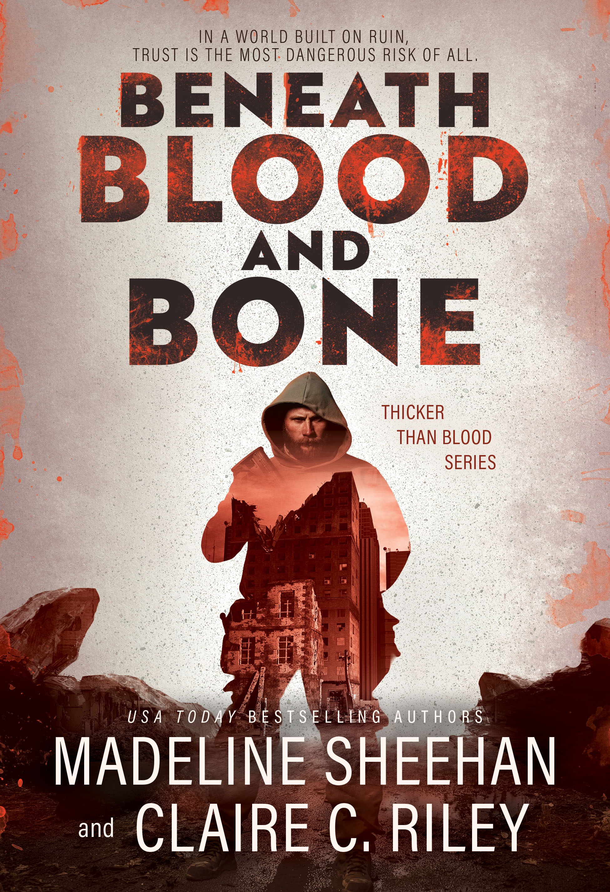

|

Beneath Blood and Bone (Thicker Than Blood 2)by Madeline Sheehan, Claire C. Riley
Autumn has survived civilization's fall by staying invisible—until she is captured and dragged into Purgatory. There, a hardened man called Eagle becomes her unexpected protector, and their fragile alliance may save them, destroy them, or teach them how to live again.
Get Your Copy →
|